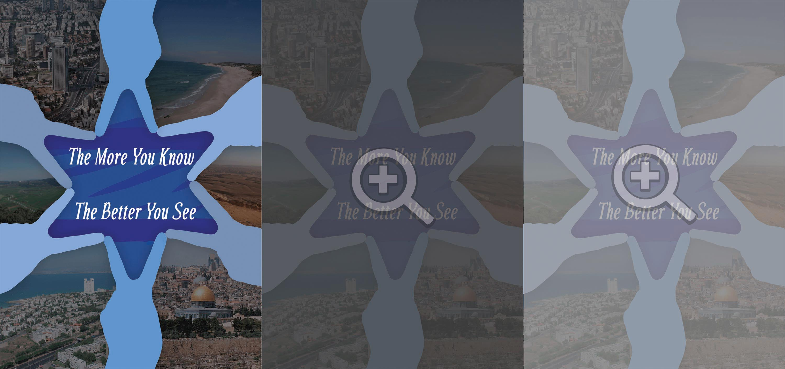

"The More You Know"
הסבר על העבודה
הפוסטר נוצר במסגרת קמפיין של ארגון AIC. הקמפיין נועד להציג את הרבגוניות הקיימת בישראל, ואולי לשנות מעט את עמדתם של אלה שלא מכירים את ישראל ולגרום להם לראות צדדים נוספים של ישראל שהם לא מכירים.
מגן הדוד שבאמצע התמונה מורכב מאצבעות בצבעים שונים כדי לחזק את המסר הרבגוני של החברה האנושית בישראל. מסביב למגן הדוד נמצאות תמונות של האזורים השונים בישראל, מאחר וישראל מתאפיינת גם בגיוון בחברה האנושית וגם בגיוון בנופים שלה.
המשפט הכתוב בתוך מגן הדוד מבוסס על המשפט "the more you know, the mre you see". השתמשתי בדמיון למשפט זה כדי להעביר למי שצופה בעבודה שייתכן והוא רואה את ישראל בצורה מסויימת מכיוון שהוא לא יודע עליה הרבה, ואם הוא ידע יותר אז אולי הוא פתאום יראה את ישראל בצורה נכונה ומדוייקת יותר.